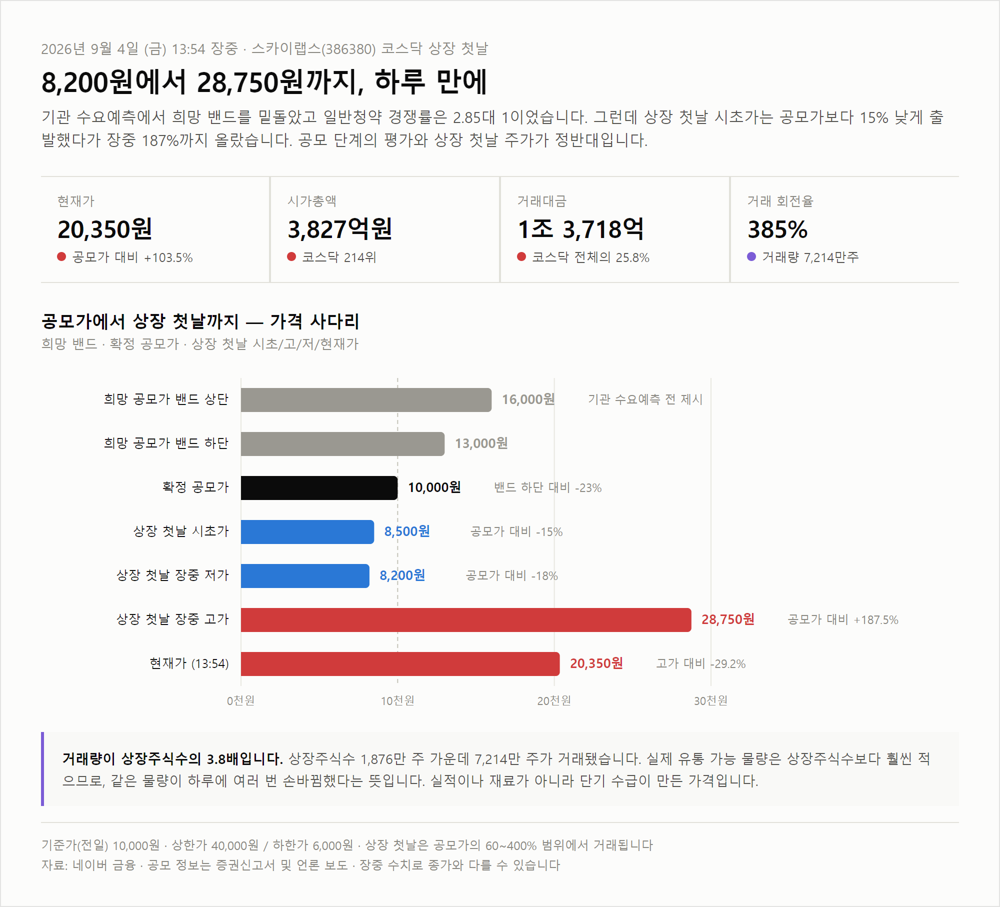
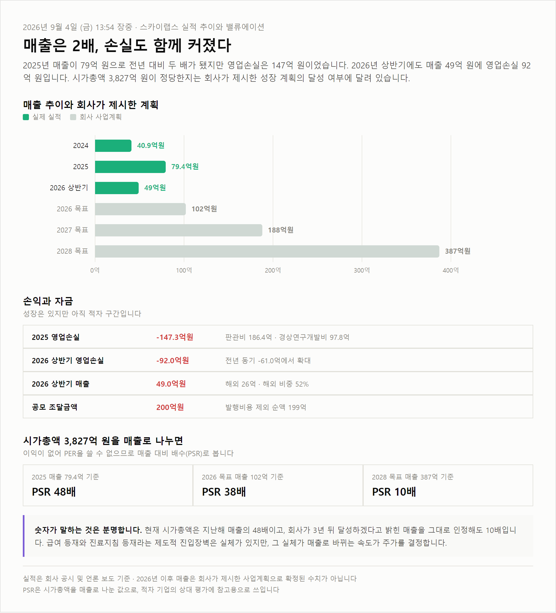

<meta charset="utf-8">
<title>스카이랩스 주가 전망 — 야간비행 일지</title>
<meta name="description" content="스카이랩스(386380) 종목 분석. 반지형 커프리스 혈압계 사업, 공모가 1만원 확정 배경, 상장 첫날 8,200원에서 28,750원까지의 주가 흐름, 실적과 밸류에이션, 향후 주가를 좌우할 다섯 가지 변수를 정리했습니다.">
<meta name="viewport" content="width=device-width, initial-scale=1">
<link rel="canonical" href="https://danielmoon82.github.io/moon/posts/sky-2026-09-04.html">
<meta property="og:type" content="article">
<meta property="og:title" content="스카이랩스 주가 전망 — 상장 첫날 8,200원에서 28,750원">
<meta property="og:description" content="반지형 혈압계 기업 스카이랩스(386380)의 사업, 공모 과정, 실적, 밸류에이션과 향후 변수를 정리했습니다.">
<meta property="og:url" content="https://danielmoon82.github.io/moon/posts/sky-2026-09-04.html">
<link rel="preconnect" href="https://fonts.googleapis.com">
<link rel="preconnect" href="https://fonts.gstatic.com" crossorigin>
<link rel="stylesheet" href="https://fonts.googleapis.com/css2?family=Hahmlet:wght@400;600;800&family=IBM+Plex+Mono:wght@400;500&family=IBM+Plex+Sans+KR:wght@300;400;500;600&display=swap">

<style>
  :root{
    --paper:#E7EBF1;--surface:#F4F6FA;--surface-2:#DCE2EC;
    --ink:#0F1729;--ink-2:#3D4A63;--ink-3:#6B7891;
    --line:#C6CEDB;--line-soft:#D6DCE6;--accent:#B06A15;--accent-bright:#C2761A;
    --up:#E5484D;--down:#3B82F6;
    --f-display:"Hahmlet",'Nanum Myeongjo',"Apple SD Gothic Neo",serif;
    --f-body:"IBM Plex Sans KR","Apple SD Gothic Neo","Malgun Gothic",sans-serif;
    --f-mono:"IBM Plex Mono","SFMono-Regular",Consolas,monospace;
    --pad:clamp(20px,5vw,64px);
  }
  @media (prefers-color-scheme:dark){
    :root:not([data-theme="light"]){
      --paper:#0B1120;--surface:#121A2C;--surface-2:#1A2439;
      --ink:#E9EEF7;--ink-2:#A9B5C9;--ink-3:#72809A;
      --line:#26314A;--line-soft:#1D2739;--accent:#E8A33D;--accent-bright:#F0B45C;
    }
  }
  /* 글자 기준 크기. 홈과 같은 값. */
  html{font-size:18px;}
  *{box-sizing:border-box;}
  body{margin:0;background:var(--paper);color:var(--ink);font-family:var(--f-body);
    font-weight:300;font-size:1rem;line-height:1.75;-webkit-font-smoothing:antialiased;}
  a{color:inherit;}
  img{max-width:100%;height:auto;}
  .wrap{max-width:760px;margin:0 auto;padding-inline:var(--pad);}
  .nav{position:sticky;top:0;z-index:20;background:color-mix(in srgb,var(--paper) 88%,transparent);
    backdrop-filter:saturate(180%) blur(12px);border-bottom:1px solid var(--line);}
  .nav-in{display:flex;align-items:center;justify-content:space-between;height:58px;}
  .brand{font-family:var(--f-display);font-weight:600;font-size:1rem;letter-spacing:-.02em;text-decoration:none;}
  .back{font-family:var(--f-mono);font-size:.72rem;color:var(--ink-3);text-decoration:none;}
  .article{padding-block:clamp(40px,7vw,72px) clamp(56px,9vw,96px);}
  .eyebrow{font-family:var(--f-mono);font-size:.68rem;letter-spacing:.16em;text-transform:uppercase;
    color:var(--accent);margin:0 0 14px;}
  h1{font-family:var(--f-display);font-weight:800;font-size:clamp(1.6rem,4.4vw,2.3rem);
    line-height:1.3;letter-spacing:-.03em;margin:0 0 16px;}
  .byline{font-family:var(--f-mono);font-size:.72rem;color:var(--ink-3);
    padding-bottom:24px;border-bottom:1px solid var(--line);margin-bottom:32px;}
  .lede{font-size:1.02rem;color:var(--ink-2);margin:0 0 28px;}
  h2{font-family:var(--f-display);font-weight:600;font-size:1.25rem;letter-spacing:-.02em;margin:42px 0 14px;}
  h3{font-family:var(--f-display);font-weight:600;font-size:1.05rem;letter-spacing:-.02em;
    margin:30px 0 10px;padding-top:14px;border-top:1px solid var(--line-soft);}
  p{margin:0 0 18px;color:var(--ink-2);}
  ul.checks{margin:0 0 18px;padding-left:20px;color:var(--ink-2);}
  ul.checks li{margin-bottom:10px;font-size:.94rem;}
  table{width:100%;border-collapse:collapse;font-size:.88rem;margin-bottom:8px;}
  th{font-family:var(--f-mono);font-size:.66rem;letter-spacing:.06em;text-transform:uppercase;
    color:var(--ink-3);text-align:right;padding:8px 6px;border-bottom:1px solid var(--line);}
  th:first-child{text-align:left;}
  td{padding:10px 6px;border-bottom:1px solid var(--line-soft);color:var(--ink-2);}
  td.num{font-family:var(--f-mono);text-align:right;font-variant-numeric:tabular-nums;}
  td.up{color:var(--up);} td.down{color:var(--down);}
  .scroll{overflow-x:auto;}
  figure{margin:26px 0;}
  figure img{display:block;border-radius:3px;background:var(--surface-2);}
  figcaption{margin-top:8px;font-family:var(--f-mono);font-size:.68rem;color:var(--ink-3);text-align:center;}
  .faq{margin:0 0 18px;padding:16px 18px;background:var(--surface);border-radius:3px;}
  .faq p{margin:0 0 6px;}
  .faq p:last-child{margin-bottom:0;}
  .faq b{color:var(--ink);font-weight:600;}
  .note{margin-top:34px;padding:16px 18px;border-left:3px solid var(--accent);
    background:var(--surface);border-radius:0 3px 3px 0;}
  .note p{margin:0;font-size:.85rem;color:var(--ink-3);}
  .foot{border-top:1px solid var(--line);background:var(--surface);padding-block:30px 38px;}
  .foot p{margin:0;font-size:.8rem;color:var(--ink-3);}
</style>

<nav class="nav">
  <div class="wrap nav-in">
    <a class="brand" href="../index.html">야간비행 일지</a>
    <a class="back" href="../index.html#stocks">← 시황으로</a>
  </div>
</nav>

<main class="wrap article">
  <p class="eyebrow">Market · Stock</p>
  <h1>스카이랩스 주가 전망 — 상장 첫날 8,200원에서 28,750원</h1>
  <p class="byline">2026-09-04 (금) 13:54 장중 기준 · 스카이랩스 386380 · 코스닥</p>

  <p class="lede">스카이랩스(386380)가 2026년 9월 4일 코스닥에 상장했습니다. 반지형 혈압계를 만드는 의료기기 회사이고, 기술특례상장 제도로 증시에 들어온 300번째 기업입니다. 공모 과정은 냉담했는데 상장 첫날 주가는 공모가의 두 배가 넘었습니다. 어떤 회사인지, 상장 첫날 무슨 일이 있었는지, 앞으로 주가를 좌우할 변수가 무엇인지 순서대로 정리합니다.</p>

  <h2>스카이랩스는 어떤 회사인가</h2>
  <p>핵심 제품은 반지 형태의 커프리스(cuffless) 혈압계입니다. 커프리스는 팔에 감는 압박대 없이 혈압을 잰다는 뜻입니다. 기존 24시간 활동혈압검사는 팔에 커프를 차고 하루를 보내야 해서 환자가 잠을 설치거나 중도에 포기하는 일이 많았습니다. 스카이랩스는 이 검사를 반지 하나로 대체하는 것을 목표로 합니다.</p>
  <p>제품군은 세 가지입니다. <strong>CART BP pro</strong>는 병·의원에서 처방하는 의료기기, <strong>CART BP</strong>는 일반 소비자용, <strong>CART ON</strong>은 입원 환자를 병동에서 모니터링하는 솔루션입니다. 회사는 스스로를 의료기기 제조사가 아니라 ‘AI 기반 의료 데이터 생산 플랫폼 기업’으로 규정합니다. 기기를 파는 것보다 기기가 만들어내는 연속 생체 데이터를 사업의 본질로 본다는 뜻입니다.</p>
  <p>이 회사를 평가할 때 가장 중요한 대목은 제도권 진입 이력입니다.</p>

  <div class="scroll">
    <table>
      <thead><tr><th>시점</th><th>내용</th></tr></thead>
      <tbody>
        <tr><td>2023년</td><td>식품의약품안전처 의료기기 허가</td></tr>
        <tr><td>2024년</td><td>건강보험심사평가원 수가 인정 (24시간 연속혈압감시)</td></tr>
        <tr><td>2024년 6월</td><td>대웅제약과 국내 병·의원 유통 계약</td></tr>
        <tr><td>2026년</td><td>대한고혈압학회 진료지침 Class IIb 반영</td></tr>
        <tr><td>2026년 8월 31일</td><td>독일 IEM과 유럽 병·의원 진출 계약</td></tr>
      </tbody>
    </table>
  </div>
  <p>커프리스 혈압계가 국내 공보험 급여와 학회 진료지침에 함께 이름을 올린 것은 스카이랩스가 처음입니다. 현재 전국 약 2,000개 병·의원에서 쓰이고 있습니다. 파트너 구성도 가볍지 않습니다. 글로벌 혈압계 1위 기업 오므론헬스케어와 전략적 파트너십을 맺었고, 일본은 오츠카제약이 CART BP pro를 독점 유통합니다.</p>

  <figure>
    
    <figcaption>희망 밴드 · 확정 공모가 · 상장 첫날 시초/고/저/현재가 · 13:54 장중</figcaption>
  </figure>

  <h2>상장 첫날, 8,200원에서 28,750원까지</h2>
  <p>9월 4일 오후 1시 54분 기준 주가는 20,350원입니다. 공모가 10,000원 대비 103.50% 높습니다. 그런데 이 숫자만 보면 하루 동안 벌어진 일을 놓치게 됩니다.</p>
  <p>시초가는 8,500원이었습니다. 공모가보다 15% 낮게 출발한 것입니다. 이후 8,200원까지 밀렸다가 방향을 바꿔 장중 28,750원까지 올랐습니다. 저점 대비 3.5배입니다. 그리고 지금은 고점에서 29% 내려온 20,350원입니다. 하루 안에 공모가 아래에서 공모가의 세 배 가까이 갔다가 다시 3분의 1을 반납한 셈입니다.</p>
  <p>거래 규모가 이 움직임의 성격을 말해줍니다. 거래량 7,214만 주, 거래대금 1조 3,718억 원입니다. 상장주식수가 1,876만 주이므로 회전율이 <strong>384.5%</strong>입니다. 상장된 주식 전체가 하루에 네 번 가까이 손바뀜한 계산인데, 실제로는 보호예수에 묶이지 않은 유통 물량만 거래되므로 그 물량이 훨씬 더 여러 번 돌았다는 뜻입니다.</p>
  <p>같은 시각 코스닥 전체 거래대금은 5조 3,240억 원이었습니다. 스카이랩스 한 종목이 <strong>코스닥 전체 거래대금의 25.8%</strong>를 차지했습니다. 시가총액 3,827억 원으로 코스닥 214위인 종목이 그날 시장 자금의 4분의 1을 빨아들인 것입니다. 실적이나 신규 계약 같은 재료가 아니라 단기 수급이 만든 가격이라고 보는 편이 자연스럽습니다.</p>

  <h2>공모 과정은 왜 냉담했나</h2>
  <p>상장 첫날의 열기와 달리 공모 단계 성적표는 초라했습니다.</p>
  <div class="scroll">
    <table>
      <thead><tr><th>항목</th><th>내용</th></tr></thead>
      <tbody>
        <tr><td>희망 공모가 밴드</td><td class="num">13,000 ~ 16,000원</td></tr>
        <tr><td>확정 공모가</td><td class="num down">10,000원 (하단 대비 -23%)</td></tr>
        <tr><td>기관 수요예측 경쟁률</td><td class="num">63.41 : 1 (참여 246건)</td></tr>
        <tr><td>희망가 하단 이하 주문 비중</td><td class="num down">69.1%</td></tr>
        <tr><td>일반청약 경쟁률</td><td class="num down">2.85 : 1</td></tr>
        <tr><td>공모 주식수 / 조달액</td><td class="num">200만 주 / 200억원</td></tr>
        <tr><td>주관사</td><td class="num">한국투자증권</td></tr>
      </tbody>
    </table>
  </div>
  <p>조달 금액도 줄었습니다. 당초 260억 원을 목표했지만 200억 원(발행비용 제외 순액 199억 원)에 그쳤고, 회사는 자금 사용 계획을 수정해야 했습니다. 연구개발 인건비 배정액이 128억 원에서 86억 원으로 축소됐습니다.</p>
  <p>정리하면 이렇습니다. 기업 가치를 직업적으로 판단하는 기관투자자들은 이 회사를 10,000원에도 부담스러워했는데, 상장 첫날 시장은 28,750원까지 값을 매겼습니다. <strong>이 간극이 지금 스카이랩스 주가를 이해하는 출발점입니다.</strong></p>

  <h2>실적 — 매출은 두 배, 손실도 함께 커졌다</h2>
  <p>2024년 매출은 40.9억 원이었고 2025년에는 79.4억 원으로 두 배가 됐습니다. 성장률만 보면 훌륭합니다. 문제는 손익입니다. 2025년 매출총이익은 39.1억 원인데 판매관리비가 186.4억 원이었습니다. 그 결과 영업손실이 147.3억 원입니다. 판관비 가운데 경상연구개발비가 97.8억 원으로 가장 큽니다.</p>
  <p>2026년 상반기도 같은 흐름입니다. 매출 49억 원에 영업손실 92억 원입니다. 전년 동기와 비교하면 매출은 40억 원에서 49억 원으로 늘었지만 영업손실은 61억 원에서 92억 원으로 더 크게 늘었습니다. <strong>매출 증가 속도보다 비용 증가 속도가 빠릅니다.</strong></p>
  <p>긍정적인 대목도 있습니다. 2026년 상반기 매출 49억 원 가운데 26억 원이 해외에서 나왔습니다. 해외 비중 52%로, 유럽 진출 초도 매출이 실제 숫자로 잡히기 시작했다는 뜻입니다. 회사가 제시한 사업계획상 매출 목표는 2026년 102억 원, 2027년 188억 원, 2028년 387억 원입니다. 다만 이는 회사의 계획이지 확정된 실적이 아닙니다.</p>

  <figure>
    
    <figcaption>매출 추이와 회사 사업계획 · 손익과 자금 · 시가총액 대비 매출 배수</figcaption>
  </figure>

  <h2>시가총액 3,827억 원은 비싼가</h2>
  <p>적자 기업이라 PER을 쓸 수 없습니다. 매출 대비 배수인 PSR로 보겠습니다.</p>
  <div class="scroll">
    <table>
      <thead><tr><th>기준</th><th>매출</th><th>PSR</th></tr></thead>
      <tbody>
        <tr><td>2025년 실적</td><td class="num">79.4억원</td><td class="num up">48배</td></tr>
        <tr><td>2026년 회사 목표</td><td class="num">102억원</td><td class="num up">38배</td></tr>
        <tr><td>2028년 회사 목표</td><td class="num">387억원</td><td class="num">10배</td></tr>
      </tbody>
    </table>
  </div>
  <p>비교 감각을 위해 말씀드리면, 성장기 의료기기·디지털헬스케어 기업이라도 PSR 10배는 이미 높은 편에 속합니다. 그런데 그 10배라는 숫자조차 회사가 3년 뒤에 달성하겠다고 밝힌 목표를 전부 달성했을 때의 이야기입니다. 현재 확정된 실적 기준으로는 48배입니다.</p>
  <p>바꿔 말하면 지금 주가에는 앞으로 3년간의 성장이 상당 부분 미리 반영돼 있습니다. 급여 등재와 진료지침 등재라는 제도적 진입장벽은 실체가 있지만, 그 실체가 매출로 얼마나 빨리 바뀌느냐가 주가의 향방을 정합니다.</p>

  <h2>향후 주가를 좌우할 다섯 가지 변수</h2>
  <ul class="checks">
    <li><strong>2026년 매출 목표 102억 원 달성 여부.</strong> 상반기에 49억 원을 했으므로 하반기에 53억 원이 필요합니다. 산술적으로 무리한 숫자는 아니지만, 3분기 실적 공시가 첫 번째 검증대입니다.</li>
    <li><strong>유럽 매출의 지속성.</strong> 상반기 해외 매출 26억 원은 독일 IEM 계약에 따른 초도 물량 성격이 강합니다. 초도 공급은 한 번으로 끝날 수 있습니다. 반복 매출로 이어지는지가 관건입니다.</li>
    <li><strong>진료지침 등급 상향.</strong> 현재 Class IIb는 “고려해볼 수 있다” 수준입니다. 환자 예후 개선 데이터가 쌓여 Class IIa 이상으로 올라가면 처방이 구조적으로 늘어납니다.</li>
    <li><strong>수익 모델의 전환.</strong> 지금은 기기를 공급하는 단발성 매출 비중이 큽니다. 검사 건수에 비례해 버는 구조로 옮겨가야 매출이 안정적으로 쌓입니다.</li>
    <li><strong>자금과 오버행.</strong> 조달액 200억 원인데 2026년 상반기 영업손실만 92억 원입니다. 현재 손실 속도라면 1년 남짓 버틸 규모입니다. 여기에 기술특례상장 특성상 보호예수가 순차적으로 풀립니다. 투자설명서의 보호예수 일정을 직접 확인하시는 편이 좋습니다.</li>
  </ul>

  <h2>시나리오별로 정리하면</h2>
  <p>주가를 맞히는 것은 불가능하므로, 어떤 조건이 충족될 때 어떤 방향이 열리는지로 정리합니다.</p>
  <p><strong>낙관 시나리오</strong>는 2026년 매출 목표를 채우고 유럽 매출이 반복 매출로 자리 잡으며 진료지침 등급이 올라가는 경우입니다. 이 경우 지금의 PSR 48배는 시간이 지나며 자연스럽게 낮아집니다. 성장주가 비싼 밸류에이션을 정당화하는 유일한 방법은 실제로 성장하는 것뿐입니다.</p>
  <p><strong>중립 시나리오</strong>는 매출은 계획대로 늘지만 손실 축소가 더딘 경우입니다. 주가가 방향 없이 넓은 박스권에서 움직이기 쉽습니다. 상장 첫날 형성된 8,200원에서 28,750원이라는 폭 자체가 향후 한동안의 참고 범위가 될 수 있습니다.</p>
  <p><strong>비관 시나리오</strong>는 매출이 계획에 미달하거나 유럽 초도 물량이 반복되지 않는 경우입니다. 여기에 보호예수 해제 물량이 겹치면 조정 폭이 커질 수 있습니다. 공모 단계에서 기관 열에 일곱이 10,000원도 비싸다고 판단했다는 사실을 기억할 필요가 있습니다.</p>
  <p>특히 상장 첫날에 매수하는 것은 위험이 큽니다. 오늘 하루만 봐도 8,200원에 산 사람과 28,750원에 산 사람의 손익이 3.5배 차이 납니다. 신규 상장주는 며칠에서 몇 주에 걸쳐 가격이 자리를 잡는 경우가 많으므로, 서두를 이유가 있는지부터 따져보시는 편이 안전합니다.</p>

  <h2>자주 묻는 질문</h2>
  <div class="faq">
    <p><b>Q. 스카이랩스 종목코드는?</b></p>
    <p>코스닥 386380입니다.</p>
  </div>
  <div class="faq">
    <p><b>Q. 공모가는 얼마였나요?</b></p>
    <p>10,000원입니다. 희망 밴드 13,000~16,000원보다 낮게 확정됐습니다.</p>
  </div>
  <div class="faq">
    <p><b>Q. 무엇을 만드는 회사인가요?</b></p>
    <p>팔에 커프를 감지 않고 혈압을 재는 반지형 커프리스 혈압계입니다. 병·의원용 CART BP pro, 소비자용 CART BP, 입원환자용 CART ON을 판매합니다.</p>
  </div>
  <div class="faq">
    <p><b>Q. 흑자 기업인가요?</b></p>
    <p>아닙니다. 2025년 영업손실 147.3억 원, 2026년 상반기 영업손실 92억 원입니다. 기술특례상장 제도로 상장했습니다.</p>
  </div>
  <div class="faq">
    <p><b>Q. 경쟁력은 무엇인가요?</b></p>
    <p>국내 공보험 급여 등재와 대한고혈압학회 진료지침 등재를 커프리스 혈압계 최초로 받았다는 점, 그리고 대웅제약·오므론헬스케어·오츠카제약·독일 IEM으로 이어지는 유통 파트너십입니다.</p>
  </div>

  <h2>정리</h2>
  <p>스카이랩스는 실체가 있는 기술과 제도적 진입장벽을 가진 회사입니다. 급여 등재와 진료지침 등재는 하루아침에 따라올 수 있는 것이 아닙니다. 동시에 아직 매출 100억 원이 안 되는 적자 기업이고, 기관투자자들이 공모 단계에서 밴드 하단 밑으로 값을 매긴 회사이기도 합니다.</p>
  <p>상장 첫날 주가는 이 두 가지 사실 중 어느 쪽도 반영하지 않았습니다. 코스닥 전체 거래대금의 4분의 1이 한 종목에 몰리고 회전율이 385%에 이르는 장세는 기업 가치와 무관하게 움직입니다. 회사를 판단하고 싶다면 오늘의 등락률이 아니라 3분기 실적과 유럽 매출의 반복성부터 확인하시는 편이 정확합니다.</p>

  <div class="note">
    <p>본 글은 시장 정보 제공을 목적으로 하며 특정 종목의 매매를 권유하지 않습니다. 주가와 시가총액, 거래량은 2026년 9월 4일 오후 1시 54분 장중 기준으로 종가와 다를 수 있습니다. 공모 정보와 실적은 증권신고서 및 언론 보도를 근거로 했으며, 2026년 이후 매출은 회사가 제시한 사업계획으로 확정된 수치가 아닙니다. 시나리오와 해석은 필자의 견해이며 예측이 아닙니다. 투자 판단과 그 책임은 투자자 본인에게 있습니다.</p>
  </div>
</main>

<footer class="foot">
  <div class="wrap"><p>야간비행 일지 · 마감 시황은 장 종료 후 자동 갱신됩니다.</p></div>
</footer>
